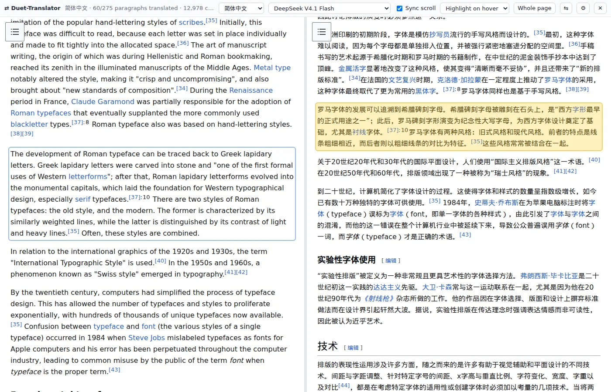
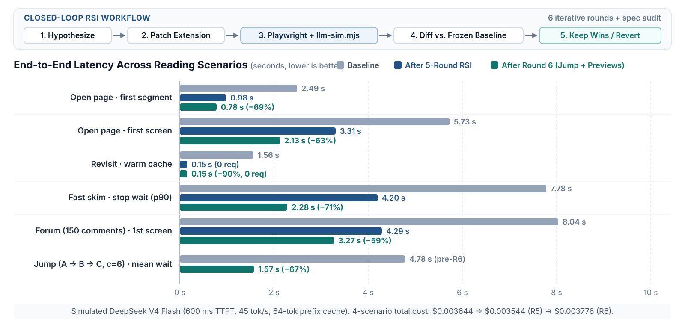

Browser translation tools generally fall into two camps: full-page replacement, which hides the original wording when a term looks off, and interleaved bilingual injection, which doubles paragraph height and pushes complex layouts out of alignment. When reading documentation, research blogs, or technical discussions, neither feels right. You want the original page untouched on one side, a clean translation on the other, and both scrolling together so your eye lands on the exact same paragraph when you glance across.
Duet-Translator is a zero-build, plain JavaScript Manifest V3 extension for Edge and Chrome built around that layout. Both panes load the real web page side by side, scroll in paragraph-level sync, translate only what is near your viewport, cache aggressively in IndexedDB and against LLM prefix caches, and work with any engine you supply—from self-hosted vLLM, SGLang, and Ollama endpoints to DeepSeek, MiniMax, OpenRouter, or DeepL.

Why Two Same-Origin Iframes
The first architectural decision is how to put two copies of a live web page in one tab. Several tempting shortcuts break on modern sites:
| Approach | Trade-off |
|---|---|
| Clone DOM for the right pane | CSS-in-JS styles injected via insertRule live outside DOM attributes; lazy images and JS interactions break |
| Reader mode extraction | Strips the site's typography, navigation, tables, and visual context |
| Two browser windows | Separate tabs and histories; awkward to resize and keep synchronized |
| Two iframes inside an extension page | Cross-origin: X-Frame-Options: SAMEORIGIN blocks loading, cookies become third-party, and the address bar shows chrome-extension:// |
| Top-level same-origin dual iframes (chosen) | First-party cookies and SAMEORIGIN work natively, the URL bar stays unchanged, and each pane renders at a true half-width viewport |
When you toggle split view in Duet-Translator, shell.js covers the active tab with a full-screen overlay and mounts two iframes pointing to the current URL. Both iframes inherit the site's origin and login session, and responsive layouts naturally adapt to half the window width without horizontal overflow.
Two safeguards make this work on strict sites. For domains returning X-Frame-Options: DENY or CSP frame-ancestors 'none' (such as GitHub repositories), the background Service Worker installs a temporary per-tab declarativeNetRequest session rule that strips only those framing response headers for subframes of that single tab, and removes the rule as soon as split view or the tab closes. Both iframes also carry sandbox without allow-top-navigation so frame-busting scripts cannot redirect the outer tab. Users who prefer strict CSP preservation can disable the header rule in settings.

shell.js coordinates scroll synchronization and navigation inside the active tab; pane.js and segment.js run inside each iframe; sw.js handles DNR rules, two-tier caching, batch scheduling, streaming SSE parsing, and engine adapters. Open full sizeParagraph-Aligned Scroll Synchronization
A naive scrollTop ratio fails almost immediately when translating between languages: Chinese prose is typically much more compact vertically than English, while technical explanations or expanded footnotes can run longer. Even if both panes start together, they drift apart by half a screen mid-article.
Segmentation and Deterministic Keys
Both panes run identical segmentation code (shared/segment.js) that walks the DOM and classifies translation units into three kinds:
- Block
elementnodes: block containers holding only inline content (p,li,h1–h6,td, or text-onlydivs). - Inline
runslices: bare text runs sitting alongside sibling blocks inside mixed containers (such as Hacker News comments), measured via DOMRangewithout mutating nodes. - Non-translated
markanchors: height-matched structural landmarks (pre,video,canvas) that stay identical across panes.
Non-content nodes (script, style, code, pre, textarea, svg, [translate=no], .notranslate, contenteditable) are skipped. Each unit receives a deterministic key computed from its normalized source text plus occurrence index on the page:
key = hash(normalizedSourceText) + "." + occurrenceIndexBecause the right pane translates in place and stores unit state exclusively in a WeakMap rather than writing attributes onto page nodes, its unit keys stay identical to the original left pane after translation finishes.
Overlap Filtering, LIS, and the Sliding Focus Line
Each pane converts its unit bounding boxes into scroll-content coordinates {k, t, b, n} (top, bottom, and character count) and reports them to shell.js via token-verified postMessage. The pure coordination module (shared/sync-core.js) turns those pairs into bidirectional scroll maps through four steps:
- Pair top and bottom edges. Matching keys produce two anchor points,
(tL, tR)and(bL, bR), so interpolation scales proportionally inside tall paragraphs—when a translated paragraph is twice as tall, scrolling halfway through the source lands halfway through the translation. - Filter side-by-side elements. Normal body paragraphs do not overlap vertically; floats, image captions, infobox rows, table cells in the same row, and multi-column cards do. Their anchors would cut across body paragraphs and distort intra-paragraph interpolation. Keeping only the segment with the largest character count in each vertically overlapping group drops maximum sync error on English Wikipedia from 292 px to 0 px and on Chinese Wikipedia from 185 px to 0 px.
- Denoise with LIS. After sorting anchors by left coordinate, taking the longest strictly increasing subsequence (LIS) of right coordinates strips out-of-order noise from sticky headers or A/B-tested sidebars that load differently between frames.
- Map along a sliding focus line. Rather than aligning only the top edge of the viewport (which prevents both panes from reaching the bottom together), the focus line moves smoothly from viewport top at scroll start to viewport bottom at scroll end:
progress r = t / (H - vh)
focusLine p = t + r * vh // top of viewport at top; bottom at bottom
mapped q = map(p) // piecewise-linear interpolation between anchors
target t' = q * (H' - vh') / H'Solving for t' guarantees that both panes hit top and bottom simultaneously while keeping the paragraph under your gaze aligned at every intermediate scroll position.
Scroll-Cause Classification and Oscillation Control
Because programmatic scrolling fires scroll events too, naive two-way listeners quickly ping-pong. Each pane classifies every scroll event in priority order before reporting:
prog: matches the last target sent byshell.js—checked first so a recently active pane cannot echo back and steal leadership.user: wheel, keyboard, touch, or pointer input within 700 ms; takes control only if its input timestamp is newer than the current driver.layout: DOM resize or translation insertion within 700 ms; keeps the driver stationary while the follower re-snaps to alignment.other: structural jumps such as in-page hash navigation.
On documentation sites or SPAs where window itself does not scroll, pane.js selects the scrollable overflow-y: auto|scroll container holding the most translatable prose—breaking ties by viewport area so split Markdown-plus-preview editors track the preview pane rather than a larger code editor.
Preserving Formatting and Streaming Translations
Pages rely heavily on inline links, bold emphasis, inline code, and citation footnotes. Stripping them produces walls of plain text; asking an LLM to emit raw HTML invites broken tags and lost event handlers. Duet-Translator instead serializes inline DOM trees into compact numbered placeholders:
<p>See <a href="...">this reference</a> and the <code><p></code> element.</p>
-> "See <g1>this reference</g1> and the <x2/> element."<gN>...</gN> wraps translatable inline elements, and on write-back Duet-Translator reuses the original DOM node objects so SPA link handlers remain intact. Atomic nodes such as <code>, images, icons, and line breaks become <xN/> slots reinserted verbatim. Single-node wrappers like <li><a>Home</a></li> are peeled before sending to avoid unnecessary markup, and if a model scrambles placeholder nesting, the validator falls back cleanly to plain text plus trailing atomic nodes and refuses to persist the corrupted output in cache.
For OpenAI-compatible engines, requests stream a JSON string array over SSE. An incremental parser in sw.js strips reasoning <think>...</think> blocks and markdown code fences, tracks top-level commas to dispatch completed segments immediately via chrome.tabs.sendMessage, and also extracts partial unclosed JSON strings every 150 ms for intra-paragraph streaming previews. If a request is aborted or fails mid-stream, the pane reconstructs the original DOM from the serialized source so half-translated fragments are never left behind or re-sent as source text. If a batch still comes back with a mismatched length, the scheduler falls back to binary-splitting and eventually single-segment retries.
Disabling unnecessary chain-of-thought reasoning via extraBody makes a dramatic difference for interactive browsing. On the English Wikipedia Typography page (275 visible segments) with DeepSeek V4.1 Flash, disabling thinking ({"thinking":{"type":"disabled"}}) dropped single-paragraph latency from 5.1 s to 1.9 s and cut output tokens from 411 to 68 compared with reasoning_effort: low; on MiniMax M3.1 Flash, lowering reasoning effort cut latency from 9.1 s to 4.5 s and output tokens from 508 to 146.
Recursive Self-Improvement: Optimizing Cost and Latency in a Closed Loop
Early versions of Duet-Translator already translated only the visible viewport plus a 0.5-screen prefetch margin, waited 300 ms after scrolling stopped, and aborted off-screen requests—keeping real Wikipedia usage to roughly 11,600 characters across four stops out of 46,600 visible characters (~75% less text sent). Yet first-screen paint still took 5.7 s, revisiting a page took 1.6 s, and jumping rapidly between sections left the reader waiting 4–6 s. Rather than tweaking heuristics by intuition, I gave Claude Code a bounded autonomous Recursive Self-Improvement (RSI) loop (1–2 hours, backed by subagents) with one rule: build a measurement harness first, then iterate strictly via hypothesize → patch → benchmark → keep only measured wins.
Building a Reproducible LLM and Browser Harness
Before touching scheduling or caching code, the loop built test/bench/ so every candidate change ran in real headless Chromium against deterministic network and billing physics:
- Simulated OpenAI-compatible LLM (
llm-sim.mjs). Models DeepSeek V4 Flash latency (600 msbase TTFT plus0.05 msper uncached input token,45 tok/sSSE streaming), 64-token prefix caching, and real billing ($0.14/$0.0028/$0.28per 1M miss / prefix-hit / output tokens), including aborted-stream output token billing. - Playwright reading scenarios (
bench.mjs&compare.mjs). Drives five realistic reading patterns against frozenextension/snapshots viaEXT_DIR: slow read (12 × 0.4-screen steps, 3.5 s dwell), revisit (warm profile reopened in a new tab), fast skim (flick to bottom, stop, flick back), forum thread (150 nested comments with heavy duplicatereply/sharestrings), and later jump reading (A → B → C rapid skips). - 120-day cache eviction replay (
cache-policy.mjs). Simulates 25 sites × 40 shared navigation strings, 60 cross-site strings, 40 visits/day, 30% revisits, and periodic 6,000–15,000-segment whole-page flushes.
Alongside the harness, the scheduling and caching core was tightened into the live architecture:
- Prefix-cache-friendly prompt layout: a fixed system prompt sits at message index 0 (with page title pushed to the tail) to maximize provider prefix-cache hits.
- Runaway-loop guard: a
max_tokensceiling prevents infinite generation loops, persisting parameter fallbacks inchrome.storage.sessionacross 30 s MV3 worker recycles. - Pre-flight batch sizing: optional per-engine
contextTokenslimits split batches before dispatch for smaller self-hosted models. - Two-tier local caching: a 4,000-entry memory LRU backed by a 64 MB / 90-day IndexedDB store keyed by SHA-1 namespaces.
- Live telemetry: a green token/cost meter embedded directly in the top bar.
Six Rounds of Hypothesize, Measure, Keep, and Revert
Each round was diffed against the frozen baseline commit (10f056a). Regressions and dead ends were surfaced by the harness and reverted rather than papered over:
| Round | Hypothesis & Change | Measured Outcome & Verdict |
|---|---|---|
| R1 | Add two-tier LRU, scroll-time cache backfill, in-page dedup, in-flight coalescing | Skim segs −40%, forum segs −14%; caught regression: forum 1st segment +23% (2.99 s → 3.69 s) from awaiting a 300-seg cache sweep upfront |
| R2 | Split cache lookup into near (≤120 segs) vs. wide (bg); visible-first wave; 2 s dwell prefetch | Blocked sweep fixed; caught two flaws: greedy bin-packing pushed trailing visible blocks to wave 2, and dwell prefetch cost +10% with zero p90 gain |
| R3 | Balanced bin-packing + startup timer bug found in trace (lastScrollTs=0 vs. new iframe performance.now()=0 triggered 1.5 s fallback) | Open 1st seg 2.49 s → 1.10 s; revisit 1.56 s → 0.15 s (0 req); caught single-slot prefetch queuing spiking slow-read p90 (1.17 s → 2.90 s) |
| R4 | Pipeline prefetch across free slots + revert dwell prefetch | Restored slow-read wait and eliminated the +10% prefetch cost overhead |
| R5 | Sweep concurrency 4 / 6 / 8 under 1/50 prefix-cache billing | 6 cut skim wait −32% and forum 1st screen −45% at flat cost (8 added no gain); DeepSeek preset raised 4 → 6 |
| Audit | Re-audit original prompt before closing loop | Caught new Array(n) sparse-hole bug (hit rate always read 100%) and missing memory-LRU writeback; added cache-policy.mjs and contextTokens pre-flight split (6 → 2+1+2+1) |
| R6 | Dogfooding surfaced slow A → B → C jumps; added jump scenario, 150 ms intra-paragraph previews, and pre-move preemption | Preemption alone failed (6.4 s: single-block calls were non-streaming); naive position preemption thrashed aborts 6 → 34 from layout wobble; pre-move rule held aborts to 17 and cut C wait 4.8 s → 1.57 s |


Before-and-After Results and Cache Eviction Study
Across the four core scenarios, Round 5 cut first-paragraph latency by 60% and revisit latency by 90% while edging total cost down by 2.7%. Because the baseline already restricted translation to the visible area, single-pass token cost was already near its floor—the biggest cost savings came from stripping duplicate segments, aborting scrolled-past requests, and capping runaway loops. Adding Round 6 streaming previews and jump preemption trades a modest +3.6% net cost over baseline (+6.5% over R5) for sub-second perceived responses when skimming or jumping:
| Scenario | Metric | Baseline | After R5 | After R6 (Previews) |
|---|---|---|---|---|
| Open page | First segment / 1st screen | 2.49 s / 5.73 s | 0.98 s / 3.31 s | 0.78 s / 2.13 s (−69% / −63%) |
| Revisit page | 1st screen (warm cache) | 1.56 s | 0.15 s (0 req) | 0.15 s (−90%, 0 req) |
| Fast skim | Stop wait p90 / segs | 7.78 s (30 segs) | 4.20 s (20 segs) | 2.28 s (25 segs, −71%) |
| 150-comment forum | Segs sent / 1st screen | 110 / 8.04 s | 95 / 4.29 s | 96 / 3.27 s (−59%) |
| Slow read | Step wait mean / p90 | 0.48 s / 1.17 s | 0.51 s / 1.48 s | 0 ms / 0 ms |
Jump A → B → C (c=6) | Mean wait / p90 | 4.78 s / 5.56 s (pre-R6) | — | 1.57 s / 2.22 s (−67%) |
| 4-scenario total | Simulated API cost | $0.003644 | $0.003544 (−2.7%) | $0.003776 (+3.6%) |
Two caveats apply to these numbers: absolute timings come from the local llm-sim.mjs physics model (use test/e2e/live.mjs to check a live endpoint's exact TTFT and throughput), and Round 6's 0 ms slow-read wait reflects intra-paragraph streaming previews appearing immediately rather than waiting for full-paragraph completion.
In the 120-day eviction study (test/bench/cache-policy.mjs), switching from FIFO to LRU eliminated roughly three-quarters of avoidable misses under tight capacity, LFU performed worst by letting stale high-frequency entries cling forever, and adding a second chance (halving hits and advancing the timestamp for entries hit ≥2 times) protected shared navigation strings when a periodic whole-page translation flushed the cache:
| Capacity & Workload (hit rate) | FIFO | LRU | LFU | LRU + 2nd Chance |
|---|---|---|---|---|
| 10k entries, daily browsing | 94.3% | 98.5% | 90.9% | 98.5% |
| 25k entries, daily browsing | 98.2% | 99.9% | 96.5% | 99.9% |
| 10k entries, +6k whole-page flush / 10d | 91.0% | 94.8% | 90.6% | 96.3% |
| 25k entries, +15k whole-page flush / 10d | 93.8% | 98.2% | 95.4% | 98.3% |
Try It
There is no build step. Load the unpacked extension/ directory directly in Edge or Chrome:
git clone https://github.com/SuperFCR/Duet-Translator.git- Open
edge://extensions(orchrome://extensions) and enable Developer mode. - Click Load unpacked and select the
extension/folder inside the cloned repository. - In the welcome page or toolbar popup, pick an engine (DeepSeek V4.1 Flash, MiniMax M3.1 Flash, DeepL, or a self-hosted OpenAI-compatible server—for remote GPU boxes, forward with
ssh -L 8000:localhost:8000 gpu-hostand set base URLhttp://127.0.0.1:8000/v1), test the connection, and pressAlt+Shift+Y(⌥⇧Yon macOS) on any page.
To run the unit, e2e, and simulated-LLM benchmark suites locally:
cd Duet-Translator/test
npm install
npx playwright install chromium
npm run test:unit
npm run test:e2e
node bench/bench.mjsCitation
Cited as:
Feng, Chaoran. (Nov 2026). Duet-Translator: Side-by-Side Web Translation with Paragraph-Aligned Scrolling. Chaoran Feng's Blog. https://www.falcary.com/blogs/duet-translator/.
Or
@article{feng2026duettranslator,
title = "Duet-Translator: Side-by-Side Web Translation with Paragraph-Aligned Scrolling",
author = "Feng, Chaoran",
journal = "falcary.com",
year = "2026",
month = "Nov",
url = "https://www.falcary.com/blogs/duet-translator/"
}References
- Duet-Translator source repository, github.com/SuperFCR/Duet-Translator.
- Duet-Translator architecture and RSI benchmark log, docs/DESIGN.md and test/bench/README.md.
- Chrome Developers.
chrome.declarativeNetRequest(Manifest V3). - DeepSeek API Docs. Context Caching on Disk.
- DeepL API Docs. XML Handling in Translation Requests.